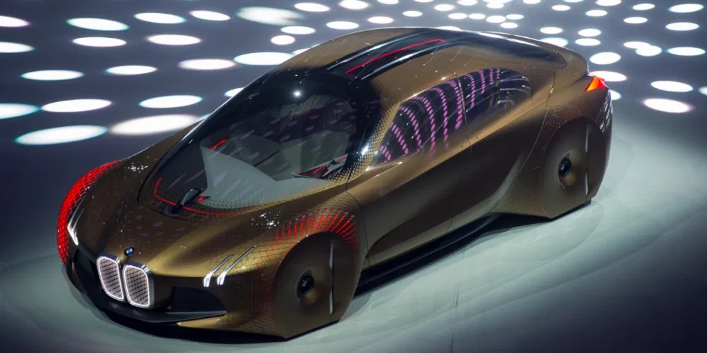

BMW has always been known as one of the best automakers in the world. That’s because of their incredible advances in engineering, technology and design over the years. Now, it looks like the 100-year-old car company is at it again.
Just take a look at its new Vision Next 100 concept car. Unveiled recently as part of BMW’s centenary celebration, the Next 100 includes a load of gadgetry you’d expect from a car of the future. There’s autonomous driving, of course, but it also sports something BMW calls “Alive Geometry,” which describes helpful information seamlessly flowing from the dashboard to the connected windshield.
According to Engadget:The Next 100 features two distinct driving modes. Boost mode gives you full control over the driving experience (assisted by all of that helpful Alive Geometry data). Ease Mode, on the other hand, retracts the steering wheel and moves the seats around for autonomous driving.
Here’s a look at more photos of the car:
